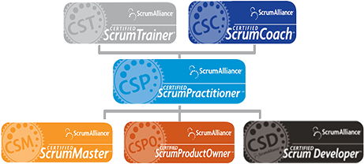

<div class="container">
    <div class="span12">
        <h1 class="pages_informations">les étapes pour devenir scrum master</h1>
        <h2 class="course_title">étape 1 : Suivre une formation Scrum Master ou Product Owner</h2>
            <p>
                Il y a des organismes de formation en France qui vous permettent de passer les certifications nécessaires pour exercer les rôles de Scrum Master et de Product Owner. Ces formations se déroulent en principe sur deux jours et sont délivrées par des Scrum Trainer. Ces derniers sont reconnus par <a href="http://www.scrumalliance.org/">la Scrum Alliance</a> comme apte à initier de nouvelles personnes au monde du Scrum. Il s’agit de personnes qui ont une bonne expérience et qui ont passé les différentes étapes de la hiérarchie (Schéma ci-dessous).
            </p>

        <h2 class="course_title">étape 2 : Passer l'examen de certification en ligne</h2>
            <p>
                Après la formation, vous aurez environ trois mois, après réception de vos identifiants sur le site de la Scrum Alliance, pour passer l’examen de certification en ligne. Cet examen est composé d’une soixantaine de questions à choix multiples auxquelles il vous faudra répondre sur une durée fixe, une heure. Ces questions abordent tous les aspects de Scrum et permettent de vérifier les connaissances acquises durant la session de formation. Une fois cet examen validé (4 tentatives uniquement), vous aurez votre page de Scrum Master et vous recevrez aussi votre certification.
            </p>

        <h2 class="course_title">Certifié(e), et après ? ...</h2>       
            <p>Une fois la certification obtenue, il vous faudra dans deux années, passer de nouveau l’examen en ligne si vous souhaitez la conserver. Ceci pousse les Scrum Master et Product Owner certifiés à conserver un bon niveau de connaissance. Durant cette période, vous pourrez donc exercer le rôle de Scrum Master sur des projets.</p>     
            <p>Ce que nous venons de voir représente le premier niveau de certification, il y a deux autres niveaux. Après un an de pratique en tant que Scrum Master, il est possible de monter un dossier pour le rang de Scrum Practioner. Ce rang permet de mettre en avant l’expérience acquise sur des projets Scrum.</p>   
            <p>Enfin, le niveau de Scrum Practioner atteint, il est possible d’accéder aux rangs de Scrum Trainer ou de Scrum Coach. Le premier a pour principale fonction de former de nouveaux Scrum Master, le second, travaillera plus en collaboration avec des clients afin de les aider à intégrer le Scrum dans leur organisation.</p>   
            <p>Vous trouverez <a href="http://www.scrumalliance.org/training">ici</a> toutes les informations nécessaires pour accéder aux différents paliers. Enfin, ci-dessous vous trouverez un graphe avec les relations entre les différentes certifications.</p>    
                                 
    </div>
</div>


